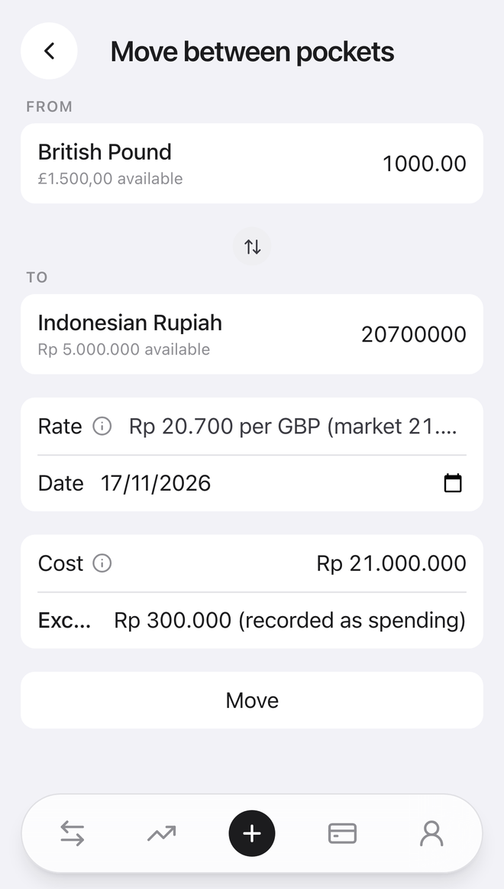
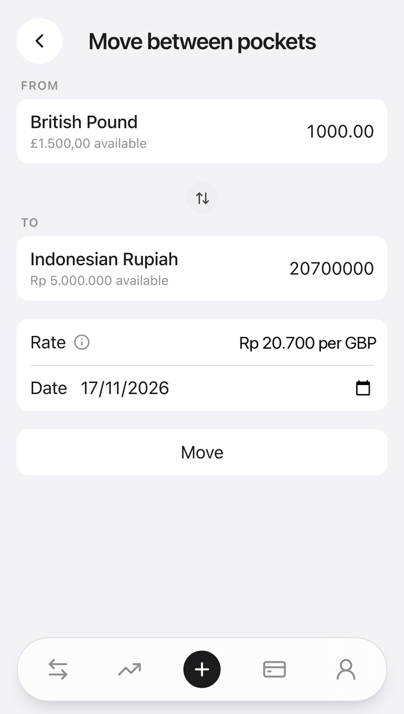

For one account holding several currencies (pockets), e.g. BCA with a GBP pocket and an IDR pocket: Wallet › the account › Move. Invented example: £1.000 out of the GBP pocket, Rp 20.700.000 into the IDR pocket. The Rate is worked out from the two amounts typed — so it is BCA's own rate. All three are real screenshots; the third has only the Rate text changed.
BEFORE (143)Move between pockets
Rate · Date, then Cost and "Exchange loss Rp 300.000 (recorded as spending)".

NOW (144)Move between pockets
Cost and Exchange already gone. Rate reads "1 GBP = 20.700,0000 IDR".

AFTERMove between pockets
Same as 144, Rate written like the receipt: "Rp 20.700 per GBP".
